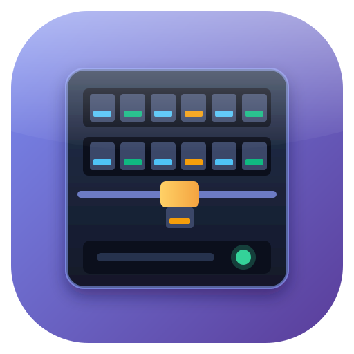
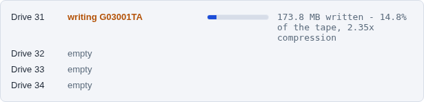
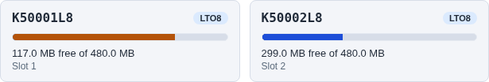

MHVTL Console
a web console for virtual tape libraries

A web console and a command line for MHVTL, the Linux virtual tape library. Create libraries, fill them with tapes, move cartridges with the robot, export them over iSCSI — and watch each drive while a backup writes to it.
Rocky Linux / AlmaLinux / RHEL 9 · Python 3.12 · MHVTL 1.7+
See it in action
Every library at a glance, one page per library, and each drive while a backup writes to it.




Screenshots from a running console, in the Daylight theme.
$ sudo mhvtl library create --profile STK --id 50 --drives 2 \ --media-type LTO8 --drive-model ULT3580-TD8 --tapes 3 --empty-slots 3 ok validate Specification is valid ok create Library 50 created: STK SL500 with 2 drives ok restart Restarted vtllibrary@50.service ok verify MHVTL can see library 50 ok media 3 tape(s) created, 0 already present in library 50 Library 50 created $ sudo mhvtl status activity 50 Library 50: 1 of 2 drive(s) hold a tape, 1 working DRIVE STATE BARCODE COUNTERS 51 writing K50001L8 300.0 MB written - 29.6% of the tape 52 empty - -
How it works
MHVTL's own files are the truth. The console reads them, and says what it will change.
Create a library
Pick a vendor and model. The console writes device.conf, restarts MHVTL, and checks MHVTL can see it — each step reported.
Add tapes
Barcodes that say their generation, and the cartridges made on disk, in the slots you choose.
Back up to it
Load a tape with the robot and write to it on this host, or export the library over iSCSI to a backup server.
Watch it work
What each drive is doing and how full each tape is, every five seconds — on the page, or mhvtl status activity.
Features
A page and a command for every task — the same code underneath.
🖥️ Web and terminal, one engine
Every page and every mhvtl command call the same Python services, so neither can do something the other cannot.
📡 Live drive state
writing, reading, holding a tape or empty — worked out from each drive daemon's own counters while the backup runs.
📼 Tapes that know their size
How full each cartridge is, from its own memory (MAM) — so a tape sitting in a slot still has a size.
🌐 Export over iSCSI
Hand a whole library to a backup server with targetcli — and take it back cleanly, backstores and all.
🗄️ Real hardware rules
Which drives each library takes, and which cartridges each drive writes or only reads — from MHVTL's own source.
🎨 Four themes
Console Navy, Graphite, Daylight and Sepia, on every page — picked per browser.
Commands
librarydrivetapeoperationsstatus serviceconfigscsiiscsiconsoleSupported libraries
The tape libraries MHVTL emulates, from nine vendors.
IBM
TS3500 (3584) frames, TS3100 / TS3200, 3582 — LTO-1 to LTO-10.
StorageTek
SL150, SL500, SL3000, L20 to L700 — T10000, T9840, T9940 and LTO.
Quantum
Scalar i500, i6000, DXi6700, PX720 — DLT, SDLT and LTO.
HP
MSL G3, MSL6000, EML and ESL E-Series — Ultrium 1 to 8.
Spectra Logic
Python, Gecko, Gator, 215 — LTO.
ADIC
Scalar i2000, Scalar 1000 — LTO.
Overland
NEO series — LTO.
Dell
PowerVault 136T — LTO.
Sony
LIB-152, LIB-302 — AIT.
Quick install
The RPM from the latest release, on Rocky Linux, AlmaLinux or RHEL 9 with MHVTL 1.7+ installed.
sudo dnf install https://github.com/abdelhaleemahmed/mhvtl-console/releases/download/v2.1.1/mhvtl-gui-2.1.1-1.el9.noarch.rpm
Then open http://your-server/ — the password is mhvtl; change it at /auth/password/.
For other distributions, the release has a tarball with an installer. The user guide has the rest.